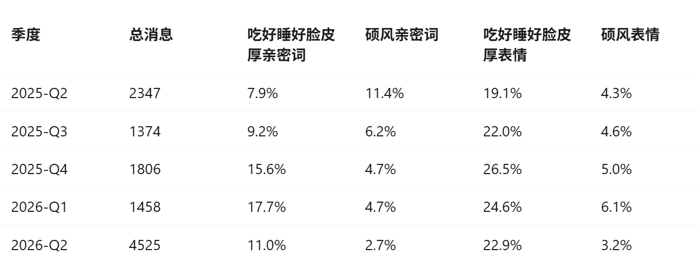

今天干了件很有意思的事情，把我和前女友的聊天记录完整塞给了GPT，让GPT评价我和她都是什么样的人，具体内容见《与GPT对话》。这个记录其实不完整，25.5之前的都没了，然后我们大多数对话其实都是面对面进行的。所以聊天记录比较片面。
大部分东西我其实都领悟到了，我们的相处模式啊，我的一些优缺点，她的一些优缺点。值得一写的东西，第一个是GPT说我更多地通过后撤来希望对方关怀我，多少带一点污蔑。因为很多时候我真的没生气，她会问“你是不是生气了”，我说我没生气是真的没生气。但是我也承认，我当时非常之不成熟，确实有的时候跟她一起赌气，有的时候也说反话，就像个小狗或者小女孩一样。另一个是她似乎在聊天记录里更多地向我道歉，这一点我是真没想到的，因为我想了想我几乎没怎么在线上生过气，我其实也没怎么生过气。我有一些真的很生气的事情都是线下发生的，anyway。
来一点有意思的统计上的东西吧！
1.我发送了 53.8% 的消息，但只占 49.9% 的发言轮次、51.8% 的普通文本字符。也就是说，我看起来“消息更多”，主要因为更喜欢拆成短句；实际对话参与量近乎对半。
2.8 小时沉默后，我重新开场占 57.9%，她占 42.1%。我确实略多承担了重新连接的动作，但差异没有悬殊到“一直是我找她”。
3.双方回复中位数都是约 0.3 分钟，说明绝大多数交流属于实时来回。她的白天节奏与我相近，但夜间中位回复时间更长。
4.我的表情占个人消息的 22.9%，她只有 4.2%，差异非常明显。不过表情不是我的单向装饰：我发表情后，她下一轮用表情回应的概率从基线 3.3% 升到 15.1%。我们确实形成了一种不对称但共享的表情语言。
5.双方都会接住亲密表达。我表达亲密后，她下一轮也表达亲密的概率由基线 7.2% 升至 12.2%；她先表达时，我的对应概率由 17.6% 升至 23.5%。
6.亲密词出现率存在明显的时间分化：2025 年第二季度她为 11.4%、我为 7.9%；到 2026 年第二季度，她降至 2.7%、我仍为 11.0%。这只是语言行为变化，不能直接等同于感情变化，但它是目前最值得回看原文的时间趋势。（我去，这个真的是很重要的发现，我在恋爱过程中缺乏这种审视）
7.我的文本中位长度是 7 字，她是 5 字；她的超短句占 28.1%，我是 15.8%。你的线上表达更完整，她更倾向于快速短答。
8.我使用“解释推理”标记的比例约为她的 3.5 倍，计划与解决类表达也更多；她的提问、征询标记更多。
9.我们使用句尾语气词的总比例接近，但风格不同：我更常用“哦、嘛、啊”，她更常用“吧、啦、呀”。

...
做一个花言巧语欺骗着你的烂人
好过一个直言不讳伤害着你的好人
做每一次爱情里笑到最后的那个人
丢了心的人
做一个虚情假意欺骗着你的烂人
好过一个自作多情伤害着你的好人
做每一次爱情里潇洒放手的那个人
死了心的人
...
--徐良《烂人》